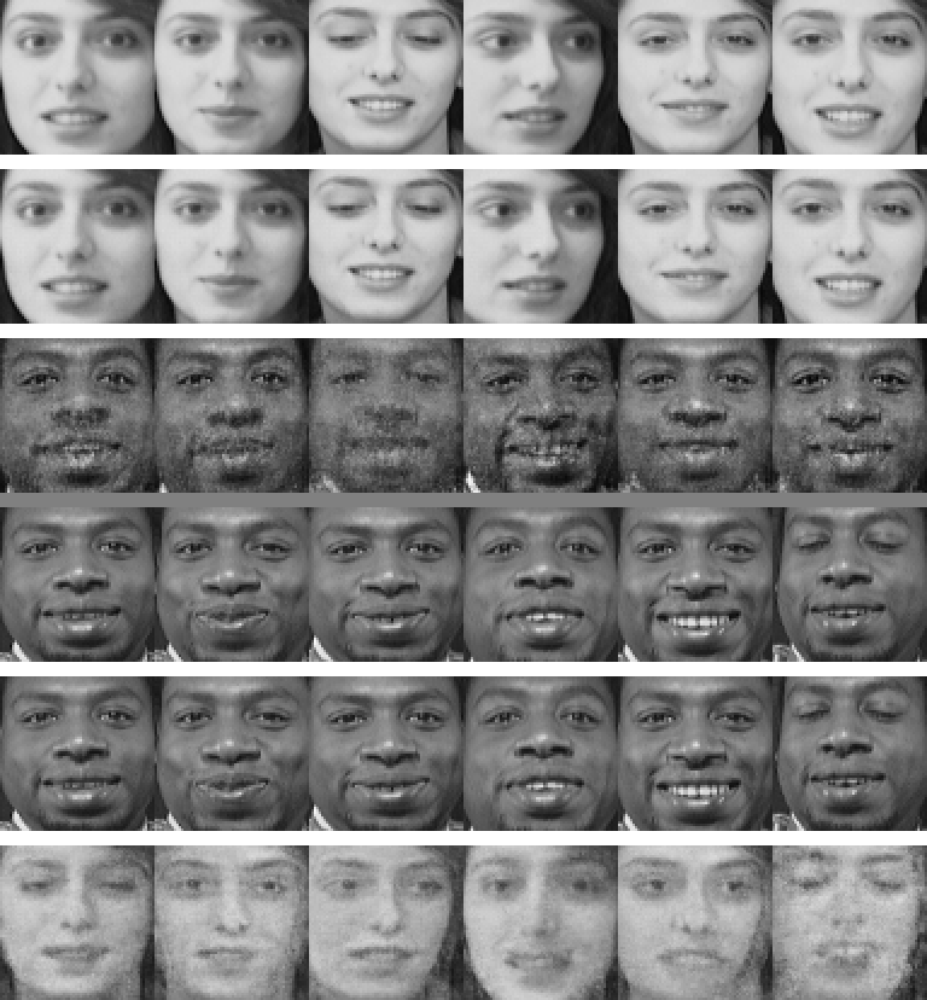
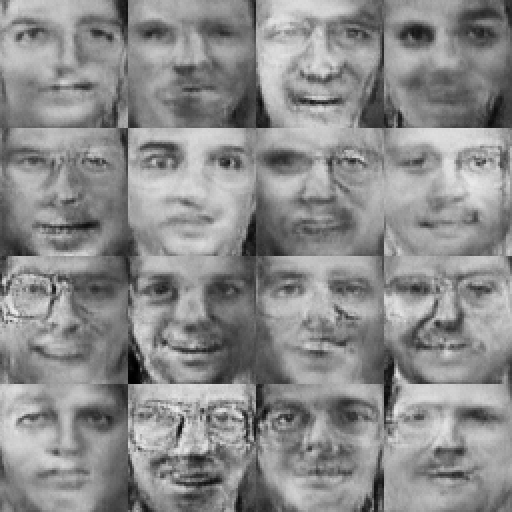
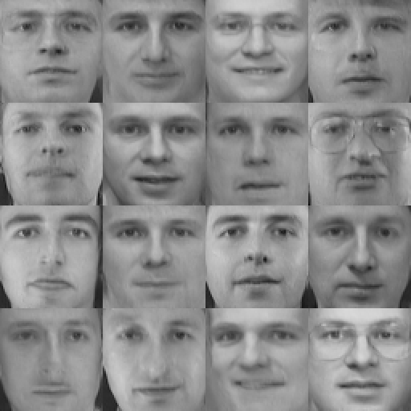
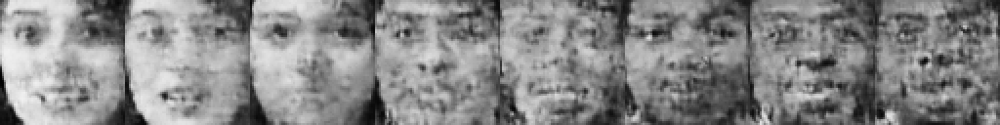
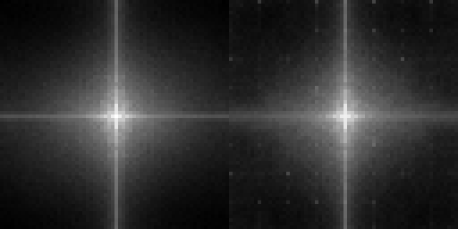

microfake
Deepfakes from first principles — build the generative machinery yourself, photo then video.
Most of this lab runs on UVA's HPC (Rivanna), so we work from the command line. Open a terminal — PowerShell or WSL on Windows, or the Terminal app on macOS — and SSH into a login node (use your own UVA computing ID, and approve the Duo push):
ssh your-computing-id@login.hpc.virginia.eduEverything below assumes you're at that shell prompt.
A deepfake is not magic. It is the output of a generative model — a system that studies thousands of real faces (or voices, or video frames) until it can produce brand-new ones that never existed. This lab builds that machinery from nothing, three ideas in the order they were invented: autoencoders (the original 2017 face-swap), GANs (two networks locked in a forgery game), and diffusion (the engine inside today's image generators) — then adds time, to make video. Every idea comes with a toy you can run and numbers you can trace by hand. And we finish on the other side of the fight: how to detect what we just learned to fake.
Generative-model vocabulary you may not have seen — latent space, denoiser, score function — is underlined like this: hover (or tap) for a plain-language explainer that opens right below the line.
One honest disclosure: nothing here was trained. Because we picked the shape's points ourselves, the perfect denoiser can be computed with a formula — no learning involved. A real image model never gets that luxury: it has to learn its denoiser from examples. That learning problem is §4, and everything between here and there builds up to it.
Every script this lab runs — the pure-stdlib toys (§2–§6), their real-face HPC companions, the shared face data, the Slurm job files, and the assignment template — ships as one zip. Grab it wherever you plan to work; it downloads fine on a Rivanna login node, so nothing needs to be uploaded later:
mkdir -p lab-20 && cd lab-20
wget https://researcher111.github.io/ML-Security-Public/labs/lab-20/lab-20-code.zip
unzip lab-20-code.zip
ls # autoencoder.py · faceswap.py · gan.py · diffusion.py · video.py · detect.py
# + their *_faces.py HPC companions · faces_all.npz · run_hpc.slurm · microfake.py …Each section below still offers per-file download buttons if you'd rather grab pieces as you go.
1 · What is a generative model?
Most models you've built in this course are discriminative: given an input $x$, they answer a question about it — is this packet malicious? is this login suspicious? is this face Alice or Bob? (In symbols, they learn $p(y \mid x)$: the probability of a label, given the input.) A generative model plays a harder game. It learns what the data itself looks like — the distribution $p(x)$ — so well that it can draw brand-new samples: faces that copy no training example, yet look like they could have come from the same pile.
A generative model is a machine that turns easy randomness into hard structure: random numbers in, a photorealistic face out. Training is learning that conversion; generation — the deepfake — is just running it. In symbols, the whole lab is one map, $\;z \sim \mathcal{N}(0, I) \;\longrightarrow\; x = G(z)$ — read: draw a list of random numbers $z$, push it through the learned function $G$, and out comes an image. Every family below is a different way to learn and run that map.
Knowing $p(x)$ buys you two superpowers, and both matter for security:
- Sampling — make new $x$. That is the deepfake: a new face, a cloned voice, a forged video frame.
- Scoring — ask how likely a given $x$ is under the model. That is the seed of detection: real and fake content often sit in different parts of $p(x)$ (§6).
The trick that makes any of this possible is the latent space. Nobody models a million pixels directly. Instead, the model learns a short code — a few hundred numbers — plus a map from that code to pixels, and does its thinking in code-land. The "Try it" demo above is this idea at its smallest — a 2D space where noise becomes structure. You met a latent space in Lab 11 (the residual stream, where "refusal" was a direction); here a direction might mean smiling, pose, or age.
- Think · 3 minYou want to learn $z \to x$ (noise to face) but you only have a pile of real faces, no "correct" $z$ for any of them. On your own, sketch how you'd even get a training signal. What would you compare the model's output against, when there's no label? Write down at least one idea before you read on.
I've done the Think step — reveal Pair & Share
- Pair · 3 minCompare ideas. Did one of you say "make the model reconstruct its own input" (autoencoder, §2)? "Have a second model judge if it looks real" (GAN, §3)? "Add noise on purpose, then learn to remove it" (diffusion, §4)? Those three answers are the three families this lab builds.
- Share · 2 minAs a table, rank the three by which you'd trust to make the most realistic face — then check your guess against the frontier note at the end of §4.
The rest of the lab is those three answers, in the order they were invented — each fixes a specific failure of the one before:
| Family | Core idea | Training signal | The deepfake it powered |
|---|---|---|---|
| §2 Autoencoder | Compress to a code, decode back; swap decoders to swap identity | Reconstruct your own input (no labels needed) | The original 2017 face-swap |
| §3 GAN | A generator and a critic play a forgery game | Fool a discriminator that's learning to catch you | StyleGAN — "this person does not exist" |
| §4 Diffusion | Destroy data with noise, learn to reverse it step by step | Predict the noise you added (a regression you can label) | Stable Diffusion, Midjourney, Sora |
Then §5 adds one axis — time — to turn a photo model into a video model, and §6 flips the whole thing: how a defender tells real from synthetic.
2 · The original deepfake · autoencoders
The first answer — "make the model reconstruct its own input" — is the autoencoder, exactly how the original 2017 "deepfakes" worked. Build two networks back to back:
- an encoder $f$ that squeezes an input $x$ (a face, say 100×100×3 = 30,000 numbers) down to a small code $z = f(x)$ (a few hundred numbers — the latent);
- a decoder $g$ that expands the code back to a full image $\hat{x} = g(z)$.
Train the pair to make the output match the input. The loss has no labels in it at all — the input is the target:
$$\mathcal{L}(f,g) \;=\; \big\lVert\, x - g(f(x)) \,\big\rVert^2 \qquad\text{(reconstruct your own input)}$$
The $\lVert\cdot\rVert^2$ bars mean squared distance: subtract the reconstruction from the input pixel by pixel, square each difference, add them all up.
If the code $z$ were as big as the image, the network could cheat by copying $x$ straight through, learning nothing. The bottleneck ($\dim z \ll \dim x$) forbids that. To rebuild 30,000 numbers from 300, the encoder must discover the structure the data has — that faces aren't random pixels but lie on a thin, curved surface (a "manifold") in pixel space. The code becomes a compressed description: this pose, this expression, this lighting. That code space is the latent space — where the deepfake happens.
The hourglass shape is the architecture's whole thesis: force everything through one narrow code and the network must learn what the data means, not just copy it. This is the exact net you train in the widget below.
- Think · 2 minBelow you'll train a tiny autoencoder with a 1-number bottleneck on 2D points that lie on a curved arc. Before you press Train: predict what the decoder's output will look like once it's trained. It can only ever output points as a function of one number $z$ — so what shape can the set of all its outputs possibly be, and where will it sit relative to the data?
I've done the Think step — reveal Pair & Share
- Pair · 3 minOne number in means the decoder traces a 1D curve through 2D space. Compare predictions: will it cut straight across the arc (minimizing average distance like a regression line) or bend to lie along it? Why does a nonlinear decoder do the latter?
- Share · 2 minTrain it and watch. The red curve is every point the decoder can produce — the bottleneck's learned manifold. It bends onto the arc because that's what minimizes reconstruction error.
No labels were used — the only signal is "make the output equal the input." The reconstruction loss drops as the 1D curve discovers the arc. That curve is the latent manifold; the single number is a coordinate along it.
2.1 The swap · one encoder, two decoders
Here is the trick that launched the word "deepfake." Take two people, Alice and Bob, and a pile of face crops of each. Train one shared encoder with two decoders, routing each person's faces only through their own decoder:
$$\text{Alice's faces:}\quad x \to f(x)=z \to g_A(z)=\hat{x} \qquad\qquad \text{Bob's faces:}\quad x \to f(x)=z \to g_B(z)=\hat{x}$$
Here's the key consequence of sharing the encoder. The code is small, and every slot in it is precious. Spending a slot on "this is Alice" would be a waste — each decoder already knows whose face it paints. So the encoder learns to fill the code with the things both decoders need from it — pose, expression, gaze, lighting — and to leave identity out. The code becomes identity-agnostic: it says how the face is arranged, never whose face it is. Each decoder then paints that arrangement as its own person, and the swap is one line:
$$\text{swap}(x_{\text{Alice}}) \;=\; g_{B}\big(f(x_{\text{Alice}})\big)$$
Alice's pose and expression, rendered as Bob.
Because the encoder is shared, the code means the same thing to both decoders — so a code computed from Alice is legible to Bob's decoder. That shared, identity-agnostic code is the hinge the whole swap turns on.
Shrink a "face" to 4 pixels: two eye pixels and two mouth pixels. Each entry is one pixel's brightness — a single number, not a coordinate pair — so a whole face is just four brightnesses stacked into a vector, $x=[\,e_1,\,e_2,\,m_1,\,m_2\,]$. (The pixels' positions never change; only their values do.) Let identity live in the eyes and expression in the mouth. Pin the numbers:
- Expression basis (a "smile" direction, mouth pixels only): $w=[\,0,\,0,\,1,\,-1\,]$.
- Alice's identity (eyes only): $a_A=[\,1,\,0.6,\,0,\,0\,]$. Bob's: $a_B=[\,0.6,\,1,\,0,\,0\,]$.
Meet the two identities the decoders will learn to paint — drawn at 8×8 at completely neutral expression, with each eye's two pixels pinned to exactly those numbers:
They differ only inside the dashed box — the eye pixels, where identity lives: $a_A$'s $[\,1,\,0.6\,]$ vs. $a_B$'s $[\,0.6,\,1\,]$, read top-to-bottom in each eye. The frame and the mouth region are pixel-for-pixel identical, and the mouth is exactly where the expression code $z$ will paint.
The widget below runs this construction on the 8×8 faces you just met: mouth pixels carry the expression $z$, everything else is identity.
The sliders never touch the network — they pose the input, changing the source face's mouth pixels. And identity here is literally the eye pixels — A's eyes read [1, 0.6] top-to-bottom, B's read [0.6, 1], the exact identity vectors from the four-pixel setup above.
Squares = input pixels; edges = the encoder's learned, frozen weights $w$; circles = the code $z$, lighting up live. Move a slider: the edges never change — only the values flowing through them do. (The darker edges come from the mouth pixels, the only ones the expression weights read.)
Both decoders receive the same two numbers. The red-outlined one is the swap — the identity you did not pick, wearing your expression.
Switch the source identity but leave the sliders alone: the expression is preserved across the swap, only identity changes. That invariance is the deepfake — and the whole reason the encoder had to be shared.
2.2 The catch that needed fixing
Autoencoders give the identity swap for free, but the faces come out blurry — and the loss function is the culprit. Squared pixel error, $\lVert x-\hat{x}\rVert^2$ (called L2 loss), rewards playing it safe. When the model can't tell which sharp answer is right (which strands of hair? which skin texture?), the output with the lowest average error is the blurry average of all the candidates. L2 pays for mush — literally, as the widget below shows:
The L2-optimal prediction (0.5) matches neither plausible reality — it's the one output a critic would flag instantly. Multiply by 30,000 pixels and that's the autoencoder's blur. The learned critic of §3 punishes exactly what this fixed loss rewards.
Here is the same objective in code — hover any line for what it does and why it's there:
The idea, unchanged: one shared encoder, two decoders. Train on two real people, then feed one person's face through the other person's decoder. Everything above — now on 64×64 photographs instead of 4 hand-picked pixels, and the encoder learns the identity/expression split instead of you assigning it.
On the cluster, faceswap.py trains the shared encoder and two decoders on the shipped face set, then writes a grid of reconstructions and swaps. PyTorch comes from a prebuilt container — nothing to install.
# 0 · connect. Off campus? turn on the UVA VPN (UVA Anywhere) first —
# without it the cluster simply won't answer.
ssh <computing-id>@login.hpc.virginia.edu # UVA password + Duo push
# you land on a LOGIN node: fine for editing and submitting, never for training
# 1 · one-time setup, on the cluster: pull the lab zip (no scp needed)
mkdir -p lab-20 && cd lab-20
wget https://researcher111.github.io/ML-Security-Public/labs/lab-20/lab-20-code.zip
unzip lab-20-code.zip # faceswap.py, faces_all.npz, run_hpc.slurm, ...
# 2 · still in ~/lab-20: submit the job to a GPU compute node
sbatch run_hpc.slurm faceswap.py --a 7 --b 21 # train + swap on a GPU node
squeue --me # wait until it leaves the queue
# 3 · when it finishes, from your laptop:
scp <id>@login.hpc.virginia.edu:~/lab-20/results.png .Prefer a live shell on a GPU machine instead of a batch job? Ask Slurm for one — this drops you onto a compute node with a GPU for an hour, where you can run the apptainer exec command from run_hpc.slurm directly and iterate. Request an A100 (gpu:a100:1): the pytorch/2.11.0 container has no CUDA kernels for the older V100s and will crash with "no kernel image is available" on one.
srun -A ds6042 -p interactive --gres=gpu:a100:1 -c 4 --mem=16G -t 01:00:00 --pty bash
# prompt changes from login node to a udc-* compute node — you're on the GPU machine
module load apptainer/1.4.5 pytorch/2.11.0
apptainer exec --nv "$CONTAINERDIR/pytorch-2.11.0.sif" python faceswap.py --a 7 --b 21What to look for: the reconstruction rows should look like each person; the swap rows should show the other identity wearing the same pose and expression. Re-run with --noise 0 and watch the swap rows turn grainy and incoherent — that latent jitter is what forces each decoder to handle the other person's codes.

A · originals A · reconstruction A→B swap B · originals B · reconstruction B→A swapThe next idea fixes this. Instead of scoring the output against pixels with a fixed formula, train a second network to tell real faces from fakes — and make the generator's goal "fool that critic." A critic won't fall for a blur. That's the GAN, §3.
Suppose you trained two separate autoencoders — encoder+decoder for Alice, a totally separate encoder+decoder for Bob — and then tried to swap by feeding Alice's code into Bob's decoder. Why would that fail, when the shared-encoder version succeeds?
Show answer
The two encoders would invent incompatible code conventions. Alice's encoder might use latent dimension 3 to mean "smiling"; Bob's encoder, trained separately, might use dimension 3 for "head tilt." Bob's decoder only understands Bob's encoder's convention, so Alice's code is gibberish to it — you'd get a garbled face, not a swap. Sharing the encoder forces a single, common code that both decoders are trained to read, which is precisely what makes a code computed from Alice meaningful to Bob's decoder.
3 · GANs · the adversarial game
The autoencoder's blur came from a fixed loss that rewarded playing it safe. So the second answer throws the fixed loss away and learns one instead: train a second network — a discriminator $D$ — to tell real images from fakes, and make the generator's goal "fool $D$." A critic isn't fooled by mush, so the generator must commit to sharp detail. This is the Generative Adversarial Network (Goodfellow et al., 2014) — what made photorealistic face synthesis ("this person does not exist") possible. Yes, click it: every page load samples a fresh $z$ and a StyleGAN renders a face of someone who has never existed. Refresh for another.
Two networks, locked in a game:
- Generator $G$: takes a noise vector $z \sim \mathcal{N}(0, I)$ — a vector whose entries are independent draws from a standard normal: mean vector $0$, identity covariance $I$, so each entry is its own $\mathcal{N}(0,1)$ sample — and outputs a fake sample $G(z)$. It never sees real data directly — it only learns from the critic's reaction.
- Discriminator $D$: takes a sample and outputs $D(x) \in [0,1]$, its estimate of "probability this is real." It must see real data — "real vs. fake" is a classification problem, and no classifier can learn a boundary from only one class — so its training set is real samples labeled $1$ and $G$'s fakes labeled $0$. And per sample it sees the whole vector: every component ($x_1$ and $x_2$ here; every pixel, for an image) feeds its input layer, and the network compresses them all into the single scalar $D(x)$.
The real sample enters $D$ exactly like the fake does: both of its components $(x_1, x_2)$ fan into every first-layer neuron — $D$ sees the whole sample, real or fake, and answers with one number. Unlike the autoencoder, nothing here compares pixels to a target. The only signal is "did you fool the critic?" — and the critic keeps getting smarter, so the bar keeps rising.
3.1 The minimax objective
The game is a single objective the two players push in opposite directions — $D$ maximizes it, $G$ minimizes it:
In plain language: $D$ wants $\log D(x)$ big (call real real) and $\log(1 - D(G(z)))$ big (call fakes fake). $G$ touches only the second term and wants it small — $D(G(z))$ near 1, the critic fooled. At equilibrium, $G$'s samples are indistinguishable from real data and $D$ is a coin flip, $D(x)=\tfrac12$ everywhere.
Two reasons. With the logs, $\max_D$ is exactly the log-loss (binary cross-entropy) you already use for classifiers — real labeled $1$, fake labeled $0$. And the log reshapes the gradient: its slope is $1/p$, so a confidently wrong verdict gets a huge corrective push while a nearly-right one barely moves. (There is also a deeper payoff — with an optimal critic, the logged objective measures a true statistical distance between the real and fake distributions, so the game provably converges to distribution matching — but you don't need it to read the widgets below.)
Only weights ever change — the §3.2 loop below updates $D$'s, then $G$'s, forever. But you can read the whole game off two numbers: $D$'s score on real images, and its score on fakes, $D(G(z))$. Every $D$ step pushes "real up, fake down"; every $G$ step pushes the fake score back up. One shared number, pulled in opposite directions — that's the tug-of-war.
So when is training done? With one network, done means the loss stops falling. Here there is no shared loss to fall — every step that helps one player hurts the other — so the only stopping point is the stalemate: $D$ stuck at ½, unable to beat the fakes. And the stalemate is the prize. If even the best critic is reduced to coin-flipping, the fakes have become indistinguishable from real data — which was $G$'s entire assignment. Success for $G$ is defined as $D$'s failure. (At that point $V = 2\log\tfrac12 \approx -1.39$, the value real training logs hover around — and in the live widget below, $D$'s background washes out to a flat ½.)
$p = D(G(z))$ is the grade the critic gives one of $G$'s fakes: $p = 0$ means "obviously fake," $p = 1$ means "looks totally real." $G$ has one job — get that grade up. Its loss function acts like a coach: at every grade $p$, it decides how loudly to yell "improve!"
Here's the problem. A brand-new $G$ makes terrible fakes, so its grade is $p \approx 0$ — and right there the original rule, $\log(1-p)$ (the gray curve below), goes nearly quiet: yell volume about $1$. This coach whispers at the failing student and screams at the star, which is backwards. So real GANs flip the rule: climb $\log p$ (the red curve) instead. It wants the exact same thing — grade up — but its volume is $1/p$: at a grade of $0.01$, that's a shout of $100$. The worse $G$ is doing, the louder the coaching. That is the non-saturating loss, and it is the $-1/(p + 10^{-8})$ line in the code below.
— log(1 − p) · minimax — log p · non-saturating (the fix)
The gray curve is flattest exactly where training starts (far left); the red curve is steepest there. Same destination, opposite volume. In general the red push is $\tfrac{1-p}{p}$ times the gray one — $99\times$ at $p = 0.01$.
3.2 Training: alternate the two players
There is no single loss that both networks want to lower, so training takes turns, forever: first $D$ practices against the current fakes (push real scores up, fake scores down), then $G$ gets a turn against that freshly sharpened critic. $G$'s turn has the one tricky part. $G$ never sees a real photo — the only way it can improve is to ask the critic: push a fake through $D$, then let backprop carry the answer to "which way should each pixel move to score more real?" backwards through $D$'s network and on into $G$'s. On that turn $D$ is only consulted, never changed — just $G$'s weights update. Here's the heart of gan.py, the complete micro-GAN you can read top to bottom and run:
- Think · 2 minThe widget below shows three things: orange dots are the real data, dark dots are $G$'s fakes, and the background is $D$'s opinion of every spot. That opinion is a number between $0$ and $1$, and the color just displays it: warm colors mean close to $1$ ("real"), cool colors close to $0$ ("fake"). Before you press Train, make two predictions. Early on, while $G$'s fakes are still easy to catch — what does the picture look like? And at the very end, when $G$ is so good that $D$ can't tell real from fake at all — what number is $D$ forced to output at every spot, and what single color does the whole picture become?
I've done the Think step — reveal Pair & Share
- Pair · 3 minEarly: warm patches sit right on the real data, everything else is cool — $D$ is winning easily. At the end: if $D$ truly can't tell, every guess is a coin flip, so it outputs ½ everywhere — and since ½ is halfway between the warm and cool ends of the scale, the whole background fades to one flat, washed-out color. Watch for exactly that fade as $G$ catches up.
- Share · 2 minOne more thing to watch. The real data comes in 8 blobs — will $G$ learn to make all 8, or lazily pile its fakes onto just a few? Everyone at the table commit to a number from 0 to 8, press Train, and check it against the "modes captured" readout.
This is the same MLP + Adam + non-saturating loss as gan.py, training in your browser. The discriminator surface flattens toward gray (½) as the generator wins — and if you see the dark dots bunch onto a few blobs and ignore the rest, you've just watched mode collapse happen live.
3.3 Why it's sharper — and how it breaks
Sharper. The autoencoder averaged because L2 loss paid for averaging. A discriminator does the opposite: a blurry face is trivially fake (real faces have crisp edges and pore-level texture; averages don't), so the only way for $G$ to push $D(G(z))\to1$ is to produce committed high-frequency detail. The learned loss has learned that blur is a tell.
How it breaks. Adversarial training buys realism at the cost of stability — two well-known failure modes, both visible in the widget:
- Mode collapse. $G$ discovers one output that reliably fools the current $D$ and pours all its mass there, ignoring whole regions of the data (a face generator that makes one convincing face for every input). On the ring, you'll see the dots abandon several blobs.
- Instability / oscillation. There's no loss being minimized — it's a moving target. If $D$ gets too strong, $G$'s gradient dies; if $G$ races ahead, $D$ can't keep up. Training can oscillate or diverge instead of settling.
The idea, scaled up: the same generator-vs-discriminator game you just watched on the 2D ring, now painting 64×64 faces. G turns random noise into a face; D judges real vs. fake; they co-adapt until G's faces pass. No labels, no target image — the only signal is D's verdict.
On the cluster, gan_faces.py trains both networks on the shipped faces and writes 16 generated people. It also saves gan_fakes.npz — a batch of its fakes that your §6 detector will later try to catch.
# same setup as §2: the script + faces_all.npz live in ~/lab-20 on the cluster
srun -A ds6042 -p interactive --gres=gpu:a100:1 -c 4 --mem=16G -t 01:00:00 --pty bash
# prompt changes from login node to a udc-* compute node — you're on the GPU machine
module load apptainer/1.4.5 pytorch/2.11.0
apptainer exec --nv "$CONTAINERDIR/pytorch-2.11.0.sif" python gan_faces.py --steps 4000
scp <id>@login.hpc.virginia.edu:~/lab-20/gan_samples.png . # from your laptopWhat to look for: 16 different faces — varied identities, some with glasses. If instead you see the same face 16 times, you've caught mode collapse live: G found one face that fools D and stopped exploring. Re-run with fewer steps to watch faces emerge from static.

GANs powered the first wave of convincing deepfakes — StyleGAN for faces, conditional GANs for face-swap and reenactment. But mode collapse and instability made them hard to scale and hard to steer with text. The next idea keeps the sharpness, drops the adversarial game, and trains on a stable regression objective instead — by turning generation into denoising. That's diffusion, §4, where the "Try it" demo finally gets explained.
If $G$'s whole goal is to make $D$ say "real," why doesn't it learn to output an exact copy of one training image (which is real and would fool any $D$)? What in the setup pushes against that?
Show answer
Two forces. (1) $G$'s only input is the noise $z$, and its output changes smoothly as $z$ changes — so to print one fixed image for every $z$, it would have to ignore its input entirely. That does happen sometimes, and it has a name: mode collapse — the failure we're trying to avoid, not a win. (2) Deeper: $D$ doesn't memorize the training set; it learns features of realness. A generator that emits one image gets caught the moment $D$ notices "real data has variety; this doesn't" — punishing a too-narrow distribution is exactly the critic's job. The goal of the game is for $G$'s distribution to match the data's, not for any single sample to match a training photo. (Memorization does happen in big models and is a real privacy concern — but it's a failure of generalization, not what the objective asks for.)
4 · Diffusion · noise to image
GANs were sharp but unstable. Diffusion keeps the sharpness and drops the instability by replacing the adversarial game with the most reliable objective in machine learning: regression. The method rests on one lopsided observation:
Destroying an image is trivial; creating one is hard. To destroy, keep adding random numbers until the photo dissolves into static — the same mechanical step every time, no learning involved. So instead of learning to create directly, diffusion learns to undo one small step of that destruction. If a network can remove a little noise, then starting from pure static you can remove a little, and a little more, and a little more — and walk all the way back to a brand-new image. Generation is just denoising, run over and over. That sentence is the entire top-of-page demo.
4.1 The forward process · destroy the image (no learning)
Take a clean image $x_0$ and add Gaussian noise scaled by a level $\sigma$. Because the noise is added in one shot, there's a closed form for "the image at noise level $\sigma$":
$$x_\sigma \;=\; x_0 \;+\; \sigma\,\varepsilon, \qquad \varepsilon \sim \mathcal{N}(0, I)$$
$\varepsilon$ is the Greek letter epsilon (not Euler's $e$): a fresh random noise image, every pixel drawn from $\mathcal{N}(0,1)$. So $\sigma\varepsilon$ is "static, scaled by the volume knob $\sigma$."
Slide $\sigma$ from $0$ up and the picture dissolves; nothing is learned here — it's a fixed recipe. Watch a face do it:
The quiet superpower here: because $x_\sigma = x_0 + \sigma\varepsilon$ is a one-shot formula, you can manufacture a (noisy, clean) training pair for any image at any noise level instantly — and you know the exact clean answer. That solves the "where's the training signal?" problem from §1 for free.
4.2 The objective · learn to undo one step (a stable regression)
Now train a network — the denoiser $D_\theta(x_\sigma, \sigma)$ — to look at a noisy image and its noise level and predict the clean image it came from. We have unlimited labeled examples (just noise a real image and remember the original), so the loss is plain mean-squared error:
$$\mathcal{L}(\theta) \;=\; \mathbb{E}_{x_0,\,\sigma,\,\varepsilon}\;\big\lVert\, D_\theta(x_0 + \sigma\varepsilon,\;\sigma) \;-\; x_0 \,\big\rVert^2$$
The $\lVert\cdot\rVert^2$ bars are a vector's squared length: subtract the two images pixel by pixel, square each difference, add them all up — ordinary squared error, written for a whole image at once. The subscripted $\mathbb{E}$ averages that error over random clean images, noise levels, and noise draws (a minibatch mean in code, same as §3).
Reminder — the best possible answer under this loss is the posterior mean $\mathbb{E}[\,x_0 \mid x_\sigma\,]$: many different clean images could have produced the noisy one you're shown, and squared error is minimized by their average, weighted by how likely each candidate is. That's the same MSE-loves-averages fact that blurred the autoencoder in §2 — diffusion tames it by asking for only a small step at a time.
Look at what this objective isn't. There's no second network, no game, no adversary that can collapse or diverge — just a regression with infinite, perfectly-labeled data. That's why diffusion training is stable where GANs are temperamental, and why it doesn't mode-collapse: every real image is a target the network is directly punished for missing. It trades the GAN's one-shot generation for many small, easy steps — and that trade is what scaled to Stable Diffusion and Sora.
4.3 Generation · reverse the process (this is the top demo)
With a trained denoiser, sampling is the loop you already watched at the top of the page. Start from pure noise $x \sim \mathcal{N}(0, \sigma_{\max}^2 I)$ — every pixel is its own random number with spread $\sigma_{\max}$. The square isn't doing anything to the noise; it's just how the notation works: $\mathcal{N}$'s second slot always reports the spread squared (statisticians call that the variance), so noise with spread $\sigma_{\max}$ gets written $\sigma_{\max}^2$. Then repeat: ask the denoiser for its best guess of the clean image, take a step toward that guess, lower the noise level, and go again. That loop — guess, step toward it, lower the noise, repeat — is the entire sampler, and it has a name you'll keep meeting in the code and the assignment: DDIM (after the paper that introduced it — short for "denoising diffusion implicit models," but the name is just a label for this exact update):
$$\hat{x}_0 = D_\theta(x, \sigma), \qquad x \;\leftarrow\; \hat{x}_0 + \frac{\sigma_{\text{next}}}{\sigma}\,(x - \hat{x}_0)$$
In these formulas, $x$ is the one thing in memory: the current image, which starts as pure static and gets a little cleaner every turn of the loop. $\hat{x}_0$ is the denoiser's guess at the clean image hiding inside the current $x$ (the hat means "estimate"). And $\sigma \to \sigma_{\text{next}}$ are two rungs on a noise ladder written down in advance — say $1.3 \to 0.9 \to 0.6 \to \cdots \to 0$ — so each turn of the loop climbs down exactly one rung.
Now the two formulas, which are one turn of the loop. Left = guess: show the denoiser the current $x$ and its rung $\sigma$; it answers $\hat{x}_0$. Right = move: the $\leftarrow$ means "replace $x$ with what's on the right" — and what's on the right is a point between where $x$ is now and what the guess says, keeping only the fraction $\sigma_{\text{next}}/\sigma$ of the gap. If that fraction is $0.6$, this turn closes $40\%$ of the distance to the guess and keeps the rest. Every turn the fraction shrinks, and on the last rung $\sigma_{\text{next}} = 0$: nothing is kept, and $x$ lands exactly on the final guess. Here it is with real numbers you can check on paper:
Take a 1-D pixel whose clean value is $x_0 = 0.8$. Forward at $\sigma = 0.5$ with a noise draw $\varepsilon = -1.2$: $x_\sigma = 0.8 + 0.5(-1.2) = 0.2$.
Pause — you just manufactured one piece of training data. The training set is nothing more than a pile of real photos; $x_0 = 0.8$ is one pixel of one of them. Noising it made a complete practice question — "input: $0.2$ at noise level $0.5$ — what was the original?" — with the answer key, $0.8$, known for free because we did the damage. And the §4.2 loss is just the squared error on this question: show the network $(0.2,\, 0.5)$, and if it answers, say, $0.5$, its loss on this example is $(0.5 - 0.8)^2 = 0.09$; the gradient step nudges its weights so next time it answers closer to $0.8$. Training is this, millions of times — every photo, random noise levels, fresh noise each round.
A perfect denoiser — one that finished all that practice — sees $0.2$ and $\sigma=0.5$ and answers $\hat{x}_0 = 0.8$. Reverse one DDIM step from $\sigma=0.5$ down to $\sigma_{\text{next}}=0.3$:
$$x \leftarrow 0.8 + \tfrac{0.3}{0.5}(0.2 - 0.8) = 0.8 + 0.6(-0.6) = 0.44$$
We didn't jump straight to $0.8$ — we moved partway and kept some noise appropriate to the new level $0.3$. Do this ~40 times, $\sigma \to 0$, and $x$ lands on the clean value. Stack a few hundred pixels and that's an image; stack a few hundred thousand and that's Stable Diffusion.
First press: $x \leftarrow 0.8 + \tfrac{0.3}{0.5}(0.2-0.8) = 0.44$ — the callout's number, live. The ratio $\sigma_{\text{next}}/\sigma$ is how much of the gap to keep; at $\sigma = 0$ nothing is kept and $x$ lands exactly on $\hat{x}_0$. A real sampler runs this loop with a learned $\hat{x}_0$ that gets re-estimated at every step.
Most confusion about diffusion comes from mixing two phases that never happen at the same time. Keep them separate:
| training day | generation day | |
|---|---|---|
| what you have | a pile of real photos | nothing but static |
| where the noisy $x$ comes from | you damage a real photo yourself: $x_0 + \sigma\varepsilon$ | random static to start, then the loop's own output |
| answer key? | yes — $x_0$, because you did the damage | no. no original exists |
| what the network does | guesses $\hat{x}_0$, gets graded by the loss, weights nudged | guesses $\hat{x}_0$; the guess is trusted and stepped toward |
| what changes | the weights $\theta$ | the image $x$ (weights frozen) |
All the network ever practiced is restoring damaged photos of real things, answer key in hand. On generation day you hand it damage that never had an original. It "restores" anyway — outputting what its training says a clean image ought to look like there — and that invention, refined over ~40 steps, is the brand-new image. Generation is restoration of a photo that never existed.
Which brings back the loop's one missing ingredient: a denoiser. The stepper above used a perfect one, and the top-of-page demo cheated the same way — we chose the data ourselves, so the perfect denoiser had a closed formula. Below is the honest version, and its two buttons are exactly the two days in the table: Train denoiser is training day (practice on damaged copies of the green data), Generate is generation day (restoration with no original). Try Generate before training — an untrained denoiser pushes noise nowhere. Then train, and watch the same noise resolve into the shape.
The network never saw the data distribution written down — it only ever saw "here's a noisy point and its level, guess the clean one." Run that learned guesser in reverse and it generates. Give it a few seconds of training (watch the loss fall), then Generate; switching shapes re-initializes it.
- Think · 2 minThe denoiser can already predict the clean image $\hat{x}_0$ from any noise level in one shot. So why not just denoise once — feed pure static in, take $\hat{x}_0$, done? Why does diffusion crawl back over dozens of steps instead?
I've done the Think step — reveal Pair & Share
- Pair · 3 minFrom pure static the denoiser has almost nothing to go on, so its one-shot guess is the blurry average of all plausible images — the very mush we escaped the autoencoder to avoid. Each small step commits to a little more detail and conditions the next guess on it, so the path can branch toward one specific sharp image. Try it: in the widget, a tiny step count looks blobby; more steps sharpen.
- Share · 2 minState the trade in one sentence (steps vs. sharpness vs. speed). This is exactly the knob — "sampling steps" — you see in every image generator's UI.
4.4 What scales this to real images
Three engineering ideas turn the toy above into Midjourney, and each is a small twist on what you just built:
- A bigger denoiser. Swap the little MLP for a U-Net (a convolutional network with skip connections) so the denoiser can handle millions of pixels. The objective is unchanged.
- Latent diffusion. Don't diffuse pixels — diffuse in the compressed code of an autoencoder (§2!). Stable Diffusion runs the whole noise/denoise loop in a small latent space, then decodes once. The two halves of this lab literally stack.
- Text conditioning. Feed the denoiser a text embedding alongside $\sigma$, so $D_\theta(x, \sigma, \text{"a photo of …"})$ denoises toward the prompt. That's how a deepfake gets directed.
A footnote for the curious: real denoisers also rescale their inputs and outputs per noise level (so the network always regresses a clean, unit-variance target) — the "preconditioning" the widget quietly uses. The idea is unchanged; it just makes training behave at every $\sigma$.
The same recipe, on faces: the 2D denoiser you trained above, scaled up to 64×64. diffusion_faces.py learns a small U-Net denoiser (the first item on the list above) on the shipped faces, then runs the reverse process from pure noise to a brand-new face — the same idea behind Stable Diffusion, tiny.
Compare it directly to your §3 GAN. Same data, same output size — but trained by plain regression, with no adversary. Watch which failure modes show up and which don't.
# same setup as §2: the script + faces_all.npz live in ~/lab-20 on the cluster
sbatch run_hpc.slurm diffusion_faces.py --steps 12000 # trains + samples on a GPU
squeue --me
scp <id>@login.hpc.virginia.edu:~/lab-20/diff_samples.png . # from your laptopWhat to look for: 16 distinct faces, soft but coherent. Crucially, every sample is a different person — no mode collapse, because there's no adversary to collapse toward. That stability, not raw sharpness, is why diffusion took over. It also saves diff_fakes.npz for the §6 detector.

You now have the complete still-image toolkit: compress (§2), sharpen (§3), and the stable, scalable generator (§4). The last move is to make it move — add a time axis so the faces blink and turn without flickering into a different person each frame. That's §5.
The denoiser is just an MLP — a pile of weights. After training on faces, in what sense does it "know" what faces look like, given it only ever practiced the narrow task "remove noise from this blurry patch"?
Show answer
To denoise well it must learn the shape of the data distribution. When a noisy patch is ambiguous, the lowest-error guess is to pull it toward the nearest high-probability region of real images — eyes are roughly here, skin is smooth there, edges look like this. That pull, summed over all noise levels, is a model of $p(\text{face})$: formally the denoiser's output encodes the score $\nabla \log p(x)$, the direction toward more-probable images. So "remove noise" and "know what faces look like" are the same skill — which is why running the denoiser in reverse generates faces it was never shown. (It's also why an under-trained or under-sized denoiser produces blurry, generic faces: a weak model of $p$ can only pull toward the average.)
5 · From image to video
A video is just a stack of images — say 24 frames a second. So the obvious plan is: take the diffusion model from §4 and generate each frame with it. That plan fails immediately, and why it fails points straight at how real video models are built.
5.1 The flicker problem
Your image generator samples from $p(\text{image})$ — a plausible face, drawn partly from random noise. Run it 24 times and you get 24 independent faces. They won't be the same face: hair, skin texture, and lighting all re-roll every frame, because nothing tied this frame's randomness to the last. Played back, that's flicker — the subject boils and jitters even when it should hold still.
The problem isn't the image model — it's the independence. A video is not 24 samples from $p(\text{image})$; it is one sample from $p(\text{video})$ — the joint distribution over all frames at once, where "frame 5 looks like frame 4 with a little motion" is part of what's being modeled. Fix the independence and the flicker goes away. The widget below proves it with a single knob: the only difference between the two clips is whether each frame's noise is drawn fresh or shared across time.
Same subject, same motion, same amount of noise — the only change is sharing the randomness through time. That single idea, correlating the noise across frames, is the seed of every video generator. (Set noise to 0 and the two clips become identical: with nothing random per frame, even the naive version is smooth.)
5.2 Content vs. motion
"Share the randomness" is the intuition; the way models act on it is to split a video into two parts and treat them differently:
- Content — who/what is in the shot (identity, background, style). This should stay fixed across the whole clip. When it varies frame-to-frame, you see flicker.
- Motion — pose, expression, position, camera. This should change smoothly over time. It's the only thing that should differ between adjacent frames.
You met this split already: the §2 face-swap idea (identity vs. expression), extended down the time axis. A video model keeps one content code for the clip and lets a smoothly-varying motion code drive each frame — exactly what the "consistent" panel does (fixed identity + noise; only the sway/blink/smile change).
5.3 How a denoiser learns to be consistent · temporal attention
You don't hand-code "keep content fixed" — the model learns it, once the denoiser can look across frames while it denoises. Run the §4 image denoiser on all frames at once, then add temporal attention: layers where each frame's features attend to the same region in the other frames (the Lab 02 attention, pointing along time instead of a sentence). Now when frame 5 is unsure how to denoise the cheek, it copies from frames 4 and 6 — the frames agree, and consistency falls out of training instead of being bolted on.
That's the whole architectural jump from image to video: same denoising objective from §4, applied to a stack of frames, with attention added along the time axis. Sora and friends are this idea, scaled.
- Think · 2 minA language model can generate a 2,000-word essay cheaply, one token at a time. A video model struggles to make 60 seconds that stay coherent. Given what you just saw — denoising a whole stack of frames jointly with attention across them — predict why video is so much more expensive and so much more prone to drifting (a character's shirt changing color halfway through).
I've done the Think step — reveal Pair & Share
- Pair · 3 minTwo compounding costs. (1) Compute/memory: a frame is already a big image; a clip is dozens of them held in memory at once so temporal attention can connect them, and attention cost grows fast with the number of frames. (2) Coherence over distance: attention is strongest between nearby frames, so information about frame 1 fades by frame 200 — the model "forgets" the original shirt color and drift creeps in, the same long-range problem you saw with context length in Lab 02.
- Share · 2 minName the trick real systems use to fight the cost (hint: where did §4 say Stable Diffusion runs the loop?). Diffusing in a compressed latent — latent video diffusion — is how the frame count becomes affordable.
5.4 What scales this to Sora
- Latent video diffusion. Don't denoise pixels across 100 frames — compress each frame with an autoencoder (§2) and diffuse the small codes. Same move that made image diffusion affordable, now paying off ~100× over because there are so many frames.
- Space-time patches. Chop the video into 3D patches (a little block of pixels across a few frames) and treat them like tokens — diffusion over a sequence of space-time tokens. This is the core of Sora's design.
- Conditioning. Same as §4: feed a text embedding (and often a starting image) so the clip is directed — "a dog surfing, cinematic." That conditioning is also what makes a video deepfake controllable.
The idea, on real faces: a video is one sample from $p(\text{video})$, not $T$ independent samples from $p(\text{image})$ — and that independence is exactly what makes generated video flicker. video_faces.py proves it by rendering the same face-morph two ways: one smooth latent trajectory (consistent) versus the same trajectory with fresh noise re-drawn every frame (naive).
# same setup as §2: the script + faces_all.npz live in ~/lab-20 on the cluster
sbatch run_hpc.slurm video_faces.py --a 7 --b 21 # trains an AE, renders both clips
squeue --me
scp '<id>@login.hpc.virginia.edu:~/lab-20/clip_*.png' . # quotes keep zsh off the *What to look for: both filmstrips show the same morph, but the naive one jitters frame-to-frame while the consistent one glides. The script prints a flicker number for each — the naive clip's is several times larger, and that gap is the flicker, with the motion held identical.

Independence causes flicker; sharing structure across time — content/motion split, temporal attention, correlated noise — fixes it. That same structure is also a weakness a defender can exploit: a face that's perfect frame-by-frame but inconsistent across frames (a flicker at the jaw, a blink that doesn't match) is one of the clearest deepfake tells. That's §6.
The "consistent" panel just reuses one fixed noise field for every frame. That kills flicker — but explain why it's not, by itself, a real video model. What does a genuine model add that a frozen noise field can't give you?
Show answer
Freezing the noise removes flicker but it can't generate motion or new content — in our toy the motion was hand-scripted (the sway/blink/smile), not learned. A real video model has to (1) produce plausible motion itself (how a face actually moves when it smiles, how cloth folds), and (2) keep content consistent while still changing the things that should change. Frozen noise only handles a degenerate case (a perfectly static subject). The model's job is the hard middle: vary motion smoothly and hold identity fixed at the same time — which is exactly why it needs to denoise frames jointly with temporal attention (5.3) rather than just stamping the same noise everywhere. Our widget isolates one ingredient (cross-frame sharing) to make the point; it isn't the whole recipe.
6 · Detecting deepfakes
You've built every generator in the attacker's kit. Now the defender's turn. The principle is simple: a generator can't help leaving fingerprints. Every method you built takes shortcuts — an upsampling layer, an averaged texture, an independently-sampled frame — and each is a tell. Detection is the craft of finding them; the catch, which we'll be honest about, is that it's an arms race the generators keep winning.
6.1 Frequency fingerprints · the spectrum sees what you can't
The most reliable forensic signal for GAN- and diffusion-made images lives in the Fourier spectrum — a re-plot of the image that shows which repeating patterns it contains instead of which pixels it has. Here's why that view matters. To turn a small code into a big image, generators upsample — and standard upsampling layers (transposed convolutions, pixel-shuffles) deposit a faint, regular checkerboard. You usually can't see it. But a repeating pattern in pixels becomes a sharp spike in the spectrum, so what the eye misses, the spectrum screams. Drag the artifact up below — the image barely changes, the spectrum erupts:
A real photograph's spectrum falls off smoothly from the center (natural images are mostly low-frequency). A generated image often has extra periodic peaks from upsampling. A detector doesn't even need a neural net for this — the ratio of high- to low-frequency energy is already a giveaway. This is the first thing a media-forensics tool checks.
6.2 Physical & physiological tells
Generators model appearance, not physics — so they get the world's bookkeeping subtly wrong, and a careful eye (or a targeted model) can catch it:
- Lighting & shadows that don't agree. A face lit from the left wearing a shadow cast to the left; specular highlights in the two eyes that imply two different light sources. The generator never solved a lighting equation.
- Reflections & geometry. Eyeglasses or pupils whose reflections don't match the scene; ears, teeth, and earrings that are subtly asymmetric because the model has no notion of a single rigid object.
- Physiology. Early GAN faces blinked too little or irregularly; pupils came out non-circular. (Each published tell gets trained away in the next model — see the arms race below.)
6.3 Temporal tells · you already built one
For video, the strongest signal is the one you manufactured in §5: inconsistency across frames. A deepfake can be flawless frame-by-frame yet betray itself in motion — a flicker at the swapped jawline, a blink that doesn't match the eyelids, lip motion that drifts out of sync with the audio, identity that subtly wobbles. The detector watches the differences between consecutive frames (exactly the flicker metric in video.py) and flags regions that change in ways real footage doesn't. The same property that makes video hard to generate makes it easier to catch.
6.4 Likelihood · is this point even on the manifold?
Recall from §1 that a generative model gives you not just sampling but scoring — how typical is this $x$? That's a detector hiding in plain sight: real images sit on the manifold (§2's thin surface in pixel space where real data lives); many fakes sit just off it. You already have the tool — the §4 denoiser. Feed it an image at a small noise level and see how much it wants to change: a real image is near the manifold, so the correction is tiny; an off-manifold fake gets yanked harder. The generator, run as its own critic, becomes a detector.
6.5 Learned detectors and the arms race
The workhorse in practice is the obvious one: collect real images and fakes, and train a classifier (a CNN) to tell them apart. It works extremely well — on the generator it was trained against. The trouble is generalization:
- It overfits the generator's fingerprint. A detector trained on StyleGAN faces leans on StyleGAN's specific upsampling artifact — and faceplants on diffusion images, which upsample differently. New generator, new fingerprint, detector retrained. The defender is always a step behind.
- The artifact is trainable away. Once a tell is published ("GANs don't blink"), the next model is trained to fix it. You can even put the detector in the training loop — which is just §3's adversarial game again, now aimed at beating forensics.
Passive detection — squinting at the pixels after the fact — is a race the defender is structurally losing: generators improve, fingerprints fade, and a detector only knows the fakes it was trained on. The durable answer flips the problem from "prove this is fake" to "prove this is real": provenance. Cryptographically sign content at the moment of capture (C2PA / Content Credentials), and watermark AI output at generation (SynthID). Then authenticity is something you can verify, not something you have to detect. This is the same lesson as the rest of the course: when detection is an arms race, lean on defense-in-depth — provenance, authentication, and human verification together, not one brittle classifier.
Close the loop: detect_faces.py trains a small classifier on real faces vs. the fakes your own §3 GAN and §4 diffusion models generated (run those first — they save gan_fakes.npz and diff_fakes.npz). It's the whole arms race in one script.
It reports two numbers: accuracy on the generator it trained on, and accuracy on the generator it has never seen. The gap is the point.
# same setup as §2 — and run these IN ORDER: step 3 reads the fakes
# steps 1 and 2 write, so wait for each to finish (squeue --me) first
sbatch run_hpc.slurm gan_faces.py --steps 4000 # 1. make GAN fakes
sbatch run_hpc.slurm diffusion_faces.py --steps 12000 # 2. make diffusion fakes
sbatch run_hpc.slurm detect_faces.py # 3. train + test the detector
# accuracies print to microfake-<jobid>.out; scp spectra.png down for the fingerprintsWhat to look for: ~99% on the generator it trained on, but near 50% — pure chance — on the unseen generator. Each generator leaves its own fingerprint, so a detector tuned to one is blind to the next. That is why passive detection loses the arms race and provenance (C2PA, SynthID) is the real defense — the course's defense-in-depth spine.

- Think · 2 minYou train a frequency-fingerprint detector (like
detect.py) and it hits 99% accuracy distinguishing real photos from this year's diffusion model. A lab down the hall releases a new generator next month. On your own, predict your detector's accuracy on the new model's images — and explain, in terms of what feature the detector actually learned, why.
I've done the Think step — reveal Pair & Share
- Pair · 3 minLikely near chance, or worse than chance. The detector didn't learn "fake" in the abstract — it learned this generator's specific upsampling fingerprint. A new architecture has a different (or no) fingerprint, so the learned feature is uninformative or actively misleading. This generalization gap is the central, unsolved problem in deepfake detection.
- Share · 2 minGiven that, argue for where a platform should spend its next dollar: a better detector, or provenance/watermarking infrastructure? Defend the trade-off out loud.
§6.4 uses the generator's denoiser to score how on-manifold an image is. Explain why that's a clever detector — and why, against a strong generator, it's exactly the detector most guaranteed to fail.
Show answer
Elegant: the denoiser already encodes $p(x)$, so "how far off-manifold is this?" is free — no separate detector to train, and it flags anything that doesn't look like real data. Doomed against a strong generator: a good generator's entire goal is to put its samples on the manifold — in high-probability regions of $p(x)$. So the better the generator, the more its fakes look exactly like real data to any density-based test, by construction. A perfect generator is, by definition, undetectable by likelihood — which is the formal version of "detection is losing." It's the same reason §3's discriminator converges to a coin flip at equilibrium: when the fake distribution matches the real one, no function of the image alone can separate them. That's precisely why the durable defense moves outside the image, to provenance.
7 · From text to image · how a sentence steers the denoiser
One piece of the modern story is still missing. §4 built a diffusion model that generates faces — but Stable Diffusion and DALL·E generate "an astronaut riding a horse" from a typed sentence. This section adds that piece, and it is smaller than you might expect: the sentence becomes one more input to the denoiser, plus one sampling-time trick to make the model actually listen.
7.1 Condition the denoiser · the caption is one more input
Recall the §4.2 denoiser: $D_\theta(x_\sigma, \sigma)$ — noisy image and noise level in, clean-image guess out. To make it text-aware, train on (image, caption) pairs scraped from the web, and hand the caption in as a third input:
$$\mathcal{L}(\theta) \;=\; \mathbb{E}\;\big\lVert\, D_\theta(x_0 + \sigma\varepsilon,\;\sigma,\;c) \;-\; x_0 \,\big\rVert^2$$
$c$ is the caption. Same loss as §4.2 — one extra input, nothing else changes. The denoiser now learns "what do astronaut pixels look like under this much noise?"
A caption can't enter a network as raw letters, so a text encoder turns it into embedding vectors first — the same tokens-to-vectors move you built in microgpt. In Stable Diffusion that encoder is CLIP, pre-trained on ~400 million (image, caption) pairs to place matching images and captions near each other in embedding space. Inside the denoiser, every layer reads the caption vectors with cross-attention: attention where the queries come from the image being denoised and the keys and values come from the caption's tokens — each image region asking "which words are about me?"
Trained this way, the model can follow text — but only weakly. Web captions describe their images loosely, so "cat" makes cat-ness only somewhat more likely, and samples drift off-prompt. The fix is one of the neatest tricks in the field.
7.2 Classifier-free guidance · exaggerate what the text changes
It starts with a small oddity in training: the caption is randomly dropped about 10% of the time (replaced by an empty string). So one network ends up knowing two jobs — a text-conditioned denoiser $D(x_\sigma, \sigma, c)$ and an unconditional one $D(x_\sigma, \sigma, \varnothing)$ — and at sampling time you can run both on the same noisy image and subtract. Look at what that difference is. Everything about the two calls is identical except the caption, so $D(c) - D(\varnothing)$ is exactly what the caption changes: an arrow pointing from "generic image" toward "image of $c$."
Now the trick: if the model follows the text too weakly, don't accept its step along that arrow — exaggerate it, going $s$ times as far. That is classifier-free guidance, and every modern text-to-image system uses it. At each denoising step, run the denoiser twice — once with the caption, once without — and blend:
$$\hat{x}_0^{\text{guided}} \;=\; \hat{x}_0(\varnothing) \;+\; s \cdot \big(\hat{x}_0(c) - \hat{x}_0(\varnothing)\big)$$
Read it as: start from what you'd paint with no text, find the direction the caption pulls, and go $s$ times as far. $s = 0$ ignores the prompt; $s = 1$ is the plain conditional model; real systems run $s \approx 5$–$10$. (Papers write the same update on the noise guess $\hat\varepsilon$ — at a fixed $\sigma$ it is the same extrapolation.)
Before you touch the widget, commit to one prediction: if a little exaggeration helps the model listen, what goes wrong with a lot — say $10\times$? Then test yourself:
At $s=0$ the prompt is ignored — half the samples land on each word. At $s=1$ you get the honest conditional model: every part of the "cat" cluster gets samples. Crank $s$ and watch the coverage number fall — the samples flee any cat that even slightly resembles a dog and pile onto the most cat-like edge. Obedience up, variety down: an exaggerated caricature of the word. Real systems show the same trade — high guidance is part of why AI images look over-saturated and "samey."
Stable Diffusion runs exactly this recipe with three upgrades. It denoises in the latent space of a trained autoencoder — §2's bottleneck, back for an encore, shrinking the image ~48× so the denoiser works on a small code instead of a million pixels. Its denoiser is a large U-Net (now often a transformer) with cross-attention to the caption at every layer. And its text encoder is CLIP, with guidance around $s \approx 7$ by default. DALL·E, Imagen, Midjourney: the same skeleton, different choices at each slot.
Mathematically, nothing in §6 changes — these are still §4-style samples, with the same fingerprints and the same provenance arguments. What changed is the cost curve: fabricating a convincing image used to mean collecting data and training a model (§2); now it means typing a sentence. And the defense surface grew a new front: the prompt itself. Providers filter prompts and refusal-train models; attackers paraphrase around the filters — the same input-channel arms race you met with prompt injection, wearing a different hat.
Assignment · finish the generator, then think like a defender
You've read every model in this lab; now build the one that matters. We hand you a complete micro-diffusion generator — the MLP, the training loop, the EDM preconditioning, the data — with exactly the two functions that are diffusion left blank. Implement them, pass the autograder, then write a short defender's analysis tying your working generator to §6.
Part 1 · Build — complete microfake.py (~45 min)
Open microfake.py and implement the two functions in the YOUR JOB block. Both are 2-D vector operations (work component-wise over k = 0, 1) — the whole assignment is two short returns, but you have to understand §4 to get them right.
Run and grade locally, from the folder holding your microfake.py:
python3 microfake.py # trains, then prints the avg distance of samples to the data
python3 test_microfake.py # the autograder (4 checks)The autograder runs four checks — two fast exact-value tests, one boundary case, and one end-to-end generation test:
- precond_target returns the EDM target (exact:
precond_target([0.8,0], [0.2,0], 0.5, 0.4)must equal[1.75, 0.0]). - ddim_step takes the right partial step (exact:
ddim_step([0.2,0], [0.8,0], 0.5, 0.3)→[0.44, 0.0]). - ddim_step lands exactly on
x0_hatwhensigma_next = 0. - generation works end-to-end: after a short training run, the model's samples land near the data manifold (avg distance < 0.18).
Part 2 · Think like a defender — reflection.md (~20 min)
Your generator now matches a data distribution. Write a short page answering three questions, each tying your build to a specific idea from the lab:
- Stability. §3 trained a GAN by an adversarial game; you trained this by plain regression. Point to the line in
microfake.pythat makes diffusion training stable, and explain in two sentences why it can't mode-collapse the way a GAN can. - Detection. Suppose a defender uses the §6.4 likelihood test — your own denoiser — to decide if a point is real or fake. As your model trains better, does that detector get more or less able to flag your samples? Justify it (this is the §3 / §6 equilibrium argument).
- The real defense. Given your answer to (2), argue in three sentences why §6 concludes that provenance (signing/watermarking) is a more durable defense than any pixel-level detector.
Bonus (+10 pts) · push the generator
Pick one and document it in your reflection: (a) change DATA to a new shape (e.g., three blobs, a spiral) and show samples still converge; (b) cut the sampling steps in sample() and report the steps-vs-quality trade you saw (the §4.3 question, made quantitative); or (c) add stochastic "churn" to ddim_step and describe how it changes the samples.
Submission
Submit microfake.py (with both functions implemented) and reflection.md. The Gradescope autograder runs a superset of test_microfake.py — passing locally is necessary but not sufficient.
Rubric
| criterion | points |
|---|---|
precond_target correct (exact-value test) | 25 |
ddim_step correct, including the sigma_next = 0 case | 25 |
| Model generates on-manifold samples end-to-end | 20 |
| Reflection Q1–Q3 — specific, correct, cites the lab | 30 |
| Total | 100 |
| Bonus · push the generator (one of a/b/c, documented) | +10 |
FAQ
Is this lab going to teach me to make harmful deepfakes?
No. The in-browser widgets run on toy 2D points and tiny abstract images — smileys and spirals. The "Now you run it" companions do use real photographs, deliberately chosen to be ethically clean: the Olivetti faces, 40 volunteers photographed for research at AT&T Laboratories Cambridge in 1992–94, distributed for exactly this kind of use. Nothing here works on a photo of someone who didn't consent, and nothing approaches the resolution or realism of a harmful fake. The goal is to understand the machinery so you can reason about it as a security professional: what's cheap, what's hard, and how detection works (§6). Understanding the generator is the prerequisite to building the detector.
Do I need a GPU or the HPC cluster?
Only for the "Now you run it" blocks — and even then, not strictly. The in-browser widgets need nothing. The pure-stdlib scripts (gan.py, diffusion.py, …) run on any Python 3, including the cluster login node's default python3 with no modules loaded. The real-face companions are written for the class allocation (ds6042) with the cluster's prebuilt PyTorch container, but they auto-detect the device: on any machine with PyTorch installed they run on CPU in a few minutes, and a GPU just makes them fast.
Why build three different models instead of just the best one?
Because each was invented to fix the previous one's flaw, and seeing that progression is the lesson. Autoencoders gave us the face-swap but produce blurry output; GANs sharpened it but are unstable and mode-collapse; diffusion is stable and high-quality but slow. You can't appreciate why diffusion looks the way it does without having felt the problems it solves.